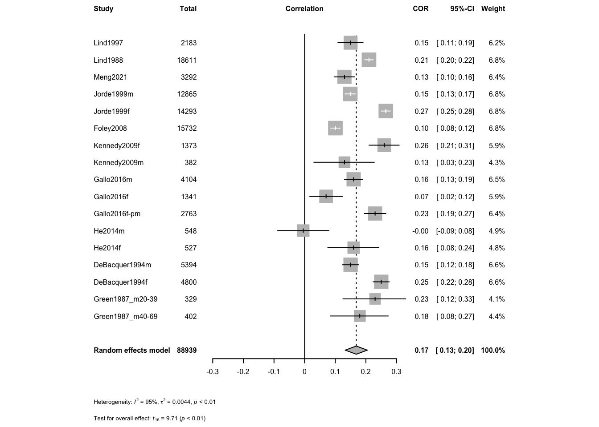

data.sheet <- 'https://docs.google.com/spreadsheets/d/e/2PACX-1vTyvQnc6bLRLGT6QXEMHxiAQVbK_zag_JIAjvYjTMXINcqdkBwglmg_mlj_k9ml9QsrNQl-tZgy8ACl/pub?gid=1100702568&single=true&output=csv'
library(readr)
data <- read_csv(data.sheet)#from a google sheetMeta Analysis of Correlations between Calcium and Cholesterol
Data Souces
Located studies from PubMed searches and checking internal references. Manually re-calculated cholesterol to mM when presented in mg/dL
The data can be found in the google sheet https://docs.google.com/spreadsheets/d/e/2PACX-1vTyvQnc6bLRLGT6QXEMHxiAQVbK_zag_JIAjvYjTMXINcqdkBwglmg_mlj_k9ml9QsrNQl-tZgy8ACl/pub?gid=1100702568&single=true&output=csv. This script can be found in /Users/davebrid/Documents/GitHub/PrecisionNutrition/Meta Analysis and was most recently run on Mon Oct 30 11:00:09 2023
Meta Analysis
Analysed data from mean +/- SD of cases and controls
library(meta)
library(tidyr)
analysis <- metacor(data=data %>% dplyr::filter(!is.na(`r`)),
cor = r,
n = n,
studlab = Study,
fixed = FALSE,
random = TRUE,
method.tau = "REML",
hakn = TRUE,
title="Calcium and Cholesterol")
forest.meta(analysis,
fontsize=6,,
test.overall.random=TRUE)
Analysis
There is solid evidence of cross-sectional associations between cholesterol and calcium levels in multiple studies. The aggregate effect size is 0.17 +/- 0.018 (p=4.15^{-8}).
Session Information
sessionInfo()R version 4.2.2 (2022-10-31)
Platform: x86_64-apple-darwin17.0 (64-bit)
Running under: macOS Big Sur ... 10.16
Matrix products: default
BLAS: /Library/Frameworks/R.framework/Versions/4.2/Resources/lib/libRblas.0.dylib
LAPACK: /Library/Frameworks/R.framework/Versions/4.2/Resources/lib/libRlapack.dylib
locale:
[1] en_US.UTF-8/en_US.UTF-8/en_US.UTF-8/C/en_US.UTF-8/en_US.UTF-8
attached base packages:
[1] stats graphics grDevices utils datasets methods base
other attached packages:
[1] tidyr_1.3.0 meta_6.5-0 readr_2.1.4 knitr_1.44
loaded via a namespace (and not attached):
[1] Rcpp_1.0.11 mathjaxr_1.6-0 nloptr_2.0.3
[4] pillar_1.9.0 compiler_4.2.2 tools_4.2.2
[7] metadat_1.2-0 boot_1.3-28.1 digest_0.6.33
[10] lme4_1.1-34 bit_4.0.5 nlme_3.1-163
[13] jsonlite_1.8.7 evaluate_0.22 lifecycle_1.0.3
[16] tibble_3.2.1 lattice_0.21-9 pkgconfig_2.0.3
[19] rlang_1.1.1 Matrix_1.5-4.1 cli_3.6.1
[22] rstudioapi_0.15.0 curl_5.1.0 yaml_2.3.7
[25] parallel_4.2.2 CompQuadForm_1.4.3 xfun_0.40
[28] fastmap_1.1.1 dplyr_1.1.3 xml2_1.3.5
[31] metafor_4.4-0 generics_0.1.3 vctrs_0.6.4
[34] htmlwidgets_1.6.2 hms_1.1.3 bit64_4.0.5
[37] grid_4.2.2 tidyselect_1.2.0 glue_1.6.2
[40] R6_2.5.1 fansi_1.0.5 vroom_1.6.4
[43] rmarkdown_2.25 minqa_1.2.6 purrr_1.0.2
[46] tzdb_0.4.0 magrittr_2.0.3 MASS_7.3-60
[49] htmltools_0.5.6.1 splines_4.2.2 numDeriv_2016.8-1.1
[52] utf8_1.2.3 crayon_1.5.2